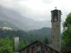
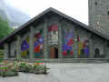
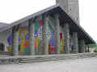
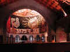
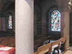
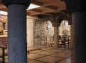
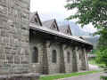
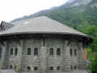
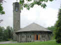

|
Plateau d'Assy, Haute-Savoie, France �glise Notre-Dame-de-Toute-Gr�ce Click on photos to enlarge |
||||
 |
 |
 |
||
|
Not far
from Chamonix, the church stands in a beautiful situation on a
mountain-side facing Mont Blanc. It was designed by the architect Maurice
Novarina and was constructed in 1937-45. Inspired by the region's
traditional domestic architecture, it is built primarily with local
materials. Its extensive decoration in contemporary style by a range of
artists was completed by 1958. |
||||
 |
 |
 |
||
|
The
tapestry in the choir is by Jean Lur�at and depicts the Woman triumphing
over the Dragon of the Apocalypse. The windows in the gallery are by
Bazaine. A number of other artists are represented in the church,
including Bonnard, Braque, Chagall, Lipschitz, Matisse, Rouault. (More
images at website by Fabrice Blanc). |
||||
 |
 |
 |
||
Two baroque churches of the 18th century in the area: Combloux, Cordon
All photographic images on this website are copyright the website owner 2001 or later unless otherwise stated. Email contact above. Full resolution originals are available for approved purposes. |